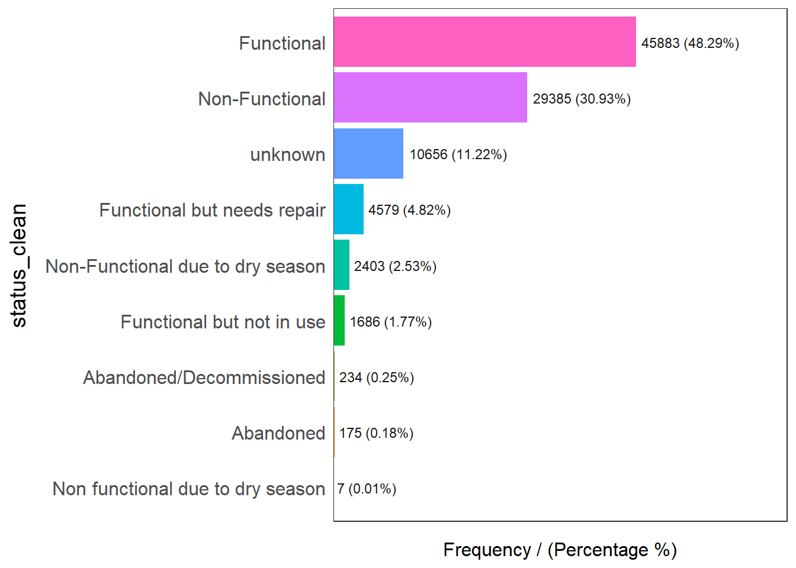
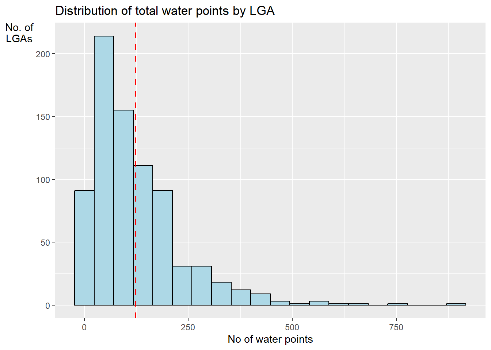

In-class Exercise 2: Geospatial Data Wrangling
Background
To study the accessibility of water points in Nigeria.
Data Handling
Datasets
The following data will be utilised in this exercise:
Apstial Data
Geospatial Data
Nigeria Level-2 Administrative Boundary (also known as Local Government Area)
or Nigeria - Subnational Administrative Boundaries from Humanitarian Data Exchange
Download R Packages
Import Datasets
Aspatial Dataset
WPdx+ Dataset
Geospatial Dataset
Nigeria Level-2 Administrative Boundary
Humanitarian Data Exchange
NGA <- st_read(dsn = "data/geospatial/nga_adm_osgof_20190417",
layer = "nga_admbnda_adm2_osgof_20190417") %>%
st_transform(crs = 26392)Reading layer `nga_admbnda_adm2_osgof_20190417' from data source
`C:\deadline2359\IS415-GAA\In-class_Ex\In-class_Ex02\data\geospatial\nga_adm_osgof_20190417'
using driver `ESRI Shapefile'
Simple feature collection with 774 features and 16 fields
Geometry type: MULTIPOLYGON
Dimension: XY
Bounding box: xmin: 2.668534 ymin: 4.273007 xmax: 14.67882 ymax: 13.89442
Geodetic CRS: WGS 84Nigeria Level-2 Administrative Boundary
geoNGA <- st_read(dsn = "data/geospatial",
layer = "geoBoundaries-NGA-ADM2") %>%
st_transform(crs = 26391)Reading layer `geoBoundaries-NGA-ADM2' from data source
`C:\deadline2359\IS415-GAA\In-class_Ex\In-class_Ex02\data\geospatial'
using driver `ESRI Shapefile'
Simple feature collection with 774 features and 5 fields
Geometry type: MULTIPOLYGON
Dimension: XY
Bounding box: xmin: 2.668534 ymin: 4.273007 xmax: 14.67882 ymax: 13.89442
Geodetic CRS: WGS 84Data Handling
WPdx+ Dataset
wp_nga$Geometry = st_as_sfc(wp_nga$`New Georeferenced Column`) # convert only this field into a sf dataframe
wp_nga# A tibble: 95,008 × 71
row_id `#source` #lat_…¹ #lon_…² #repo…³ #stat…⁴ #wate…⁵ #wate…⁶ #wate…⁷
<dbl> <chr> <dbl> <dbl> <chr> <chr> <chr> <chr> <chr>
1 429068 GRID3 7.98 5.12 08/29/… Unknown <NA> <NA> Tapsta…
2 222071 Federal Minis… 6.96 3.60 08/16/… Yes Boreho… Well Mechan…
3 160612 WaterAid 6.49 7.93 12/04/… Yes Boreho… Well Hand P…
4 160669 WaterAid 6.73 7.65 12/04/… Yes Boreho… Well <NA>
5 160642 WaterAid 6.78 7.66 12/04/… Yes Boreho… Well Hand P…
6 160628 WaterAid 6.96 7.78 12/04/… Yes Boreho… Well Hand P…
7 160632 WaterAid 7.02 7.84 12/04/… Yes Boreho… Well Hand P…
8 642747 Living Water … 7.33 8.98 10/03/… Yes Boreho… Well Mechan…
9 642456 Living Water … 7.17 9.11 10/03/… Yes Boreho… Well Hand P…
10 641347 Living Water … 7.20 9.22 03/28/… Yes Boreho… Well Hand P…
# … with 94,998 more rows, 62 more variables: `#water_tech_category` <chr>,
# `#facility_type` <chr>, `#clean_country_name` <chr>, `#clean_adm1` <chr>,
# `#clean_adm2` <chr>, `#clean_adm3` <chr>, `#clean_adm4` <chr>,
# `#install_year` <dbl>, `#installer` <chr>, `#rehab_year` <lgl>,
# `#rehabilitator` <lgl>, `#management_clean` <chr>, `#status_clean` <chr>,
# `#pay` <chr>, `#fecal_coliform_presence` <chr>,
# `#fecal_coliform_value` <dbl>, `#subjective_quality` <chr>, …Create Simple Feature DataFrame
Simple feature collection with 95008 features and 70 fields
Geometry type: POINT
Dimension: XY
Bounding box: xmin: 2.707441 ymin: 4.301812 xmax: 14.21828 ymax: 13.86568
Geodetic CRS: WGS 84
# A tibble: 95,008 × 71
row_id `#source` #lat_…¹ #lon_…² #repo…³ #stat…⁴ #wate…⁵ #wate…⁶ #wate…⁷
* <dbl> <chr> <dbl> <dbl> <chr> <chr> <chr> <chr> <chr>
1 429068 GRID3 7.98 5.12 08/29/… Unknown <NA> <NA> Tapsta…
2 222071 Federal Minis… 6.96 3.60 08/16/… Yes Boreho… Well Mechan…
3 160612 WaterAid 6.49 7.93 12/04/… Yes Boreho… Well Hand P…
4 160669 WaterAid 6.73 7.65 12/04/… Yes Boreho… Well <NA>
5 160642 WaterAid 6.78 7.66 12/04/… Yes Boreho… Well Hand P…
6 160628 WaterAid 6.96 7.78 12/04/… Yes Boreho… Well Hand P…
7 160632 WaterAid 7.02 7.84 12/04/… Yes Boreho… Well Hand P…
8 642747 Living Water … 7.33 8.98 10/03/… Yes Boreho… Well Mechan…
9 642456 Living Water … 7.17 9.11 10/03/… Yes Boreho… Well Hand P…
10 641347 Living Water … 7.20 9.22 03/28/… Yes Boreho… Well Hand P…
# … with 94,998 more rows, 62 more variables: `#water_tech_category` <chr>,
# `#facility_type` <chr>, `#clean_country_name` <chr>, `#clean_adm1` <chr>,
# `#clean_adm2` <chr>, `#clean_adm3` <chr>, `#clean_adm4` <chr>,
# `#install_year` <dbl>, `#installer` <chr>, `#rehab_year` <lgl>,
# `#rehabilitator` <lgl>, `#management_clean` <chr>, `#status_clean` <chr>,
# `#pay` <chr>, `#fecal_coliform_presence` <chr>,
# `#fecal_coliform_value` <dbl>, `#subjective_quality` <chr>, …Projection Transformation
Geospatial Data Cleaning
Excluding Redundant Fields
Checking for Duplicate Name
It is important to check for duplicated name in the data main data fields. Using duplicated() of Base R, we can flag out LGA names that might be duplicated as shown in the code chuck below.
[1] "Bassa" "Ifelodun" "Irepodun" "Nasarawa" "Obi" "Surulere"NGA$ADM2_EN[94] <- "Bassa, Kogi"
NGA$ADM2_EN[95] <- "Bassa, Plateau"
NGA$ADM2_EN[304] <- "Ifelodun, Kwara"
NGA$ADM2_EN[305] <- "Ifelodun, Osun"
NGA$ADM2_EN[355] <- "Irepodun, Kwara"
NGA$ADM2_EN[356] <- "Irepodun, Osun"
NGA$ADM2_EN[519] <- "Nasarawa, Kano"
NGA$ADM2_EN[520] <- "Nasarawa, Nasarawa"
NGA$ADM2_EN[546] <- "Obi, Benue"
NGA$ADM2_EN[547] <- "Obi, Nasarawa"
NGA$ADM2_EN[693] <- "Surulure, Lagos"
NGA$ADM2_EN[694] <- "Surulure, Oyo"Data Wrangling for Water Point Data

#status_clean frequency percentage cumulative_perc
1 Functional 45883 48.29 48.29
2 Non-Functional 29385 30.93 79.22
3 <NA> 10656 11.22 90.44
4 Functional but needs repair 4579 4.82 95.26
5 Non-Functional due to dry season 2403 2.53 97.79
6 Functional but not in use 1686 1.77 99.56
7 Abandoned/Decommissioned 234 0.25 99.81
8 Abandoned 175 0.18 99.99
9 Non functional due to dry season 7 0.01 100.00wp_sf_nga <- wp_sf %>%
rename(status_clean = '#status_clean') %>%
select(status_clean) %>%
mutate(status_clean = replace_na(
status_clean, "unknown" # rename NA to be called "unknown"
))
freq(data = wp_sf_nga,
input = 'status_clean')
status_clean frequency percentage cumulative_perc
1 Functional 45883 48.29 48.29
2 Non-Functional 29385 30.93 79.22
3 unknown 10656 11.22 90.44
4 Functional but needs repair 4579 4.82 95.26
5 Non-Functional due to dry season 2403 2.53 97.79
6 Functional but not in use 1686 1.77 99.56
7 Abandoned/Decommissioned 234 0.25 99.81
8 Abandoned 175 0.18 99.99
9 Non functional due to dry season 7 0.01 100.00Extract Water Point Data
wp_nonfunctional <- wp_sf_nga %>%
filter(status_clean %in%
c("Abandoned/Decommissioned",
"Abandoned",
"Non-Functional due to dry season",
"Non-Functional",
"Non functional due to dry season",
"Non-Functional due to dry season"))
wp_nonfunctionalSimple feature collection with 32204 features and 1 field
Geometry type: POINT
Dimension: XY
Bounding box: xmin: 28907.91 ymin: 33736.93 xmax: 1209690 ymax: 1092883
Projected CRS: Minna / Nigeria Mid Belt
# A tibble: 32,204 × 2
status_clean Geometry
* <chr> <POINT [m]>
1 Abandoned/Decommissioned (578642.2 141523.1)
2 Abandoned/Decommissioned (571655.4 70856.98)
3 Abandoned/Decommissioned (571629.5 143544)
4 Abandoned/Decommissioned (608748.8 141693.1)
5 Abandoned/Decommissioned (576876.2 66860.76)
6 Abandoned/Decommissioned (698288 224655.8)
7 Abandoned/Decommissioned (698293.1 224809.4)
8 Abandoned/Decommissioned (341287.7 459644.6)
9 Abandoned/Decommissioned (402193.2 89488.33)
10 Abandoned/Decommissioned (589410.8 147917.3)
# … with 32,194 more rowsSimple feature collection with 10656 features and 1 field
Geometry type: POINT
Dimension: XY
Bounding box: xmin: 29143.21 ymin: 36660.5 xmax: 1293293 ymax: 965811.9
Projected CRS: Minna / Nigeria Mid Belt
# A tibble: 10,656 × 2
status_clean Geometry
* <chr> <POINT [m]>
1 unknown (297874.6 441473.8)
2 unknown (607559.4 274905.5)
3 unknown (576523.1 301556.6)
4 unknown (578321.7 307339.8)
5 unknown (590994.2 326738.8)
6 unknown (597909.2 333608.5)
7 unknown (724171.9 367609.1)
8 unknown (737994.1 350616.5)
9 unknown (749790.1 354304.6)
10 unknown (728109.9 367079.1)
# … with 10,646 more rowsPerforming Point-in-Polygon Count
NGA_wp <- NGA %>%
mutate('total_wp' = lengths(
st_intersects(NGA, wp_sf_nga))) %>%
mutate('wp_functional' = lengths(
st_intersects(NGA, wp_functional))) %>%
mutate('wp_nonfunctional' = lengths(
st_intersects(NGA, wp_nonfunctional))) %>%
mutate('wp_unknown' = lengths(
st_intersects(NGA, wp_unknown)))Visualising attributes by using statistical graphs
ggplot(data = NGA_wp,
aes(x = total_wp)) +
geom_histogram(bins = 20,
color = "black",
fill = "light blue") +
geom_vline(aes(xintercept = mean(
total_wp, na.rm = T)),
color = "red",
linetype = "dashed",
size = 0.8) +
ggtitle("Distribution of total water points by LGA") +
xlab("No of water points") +
ylab("No. of\nLGAs") +
theme(axis.title.y = element_text(angle = 0)) # total y-axis title